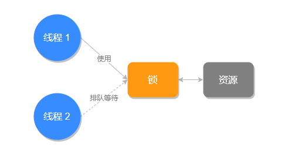
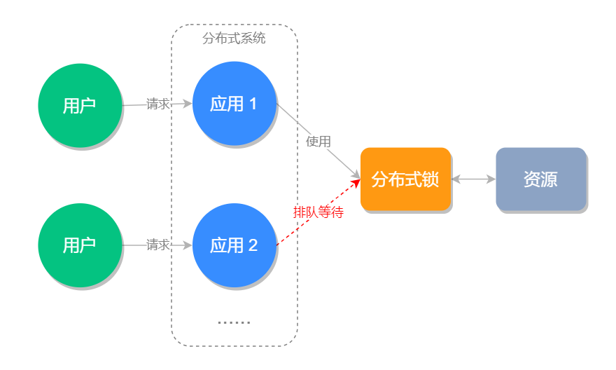

- 01 Redis 是如何执行的.md.html
- 02 Redis 快速搭建与使用.md.html
- 03 Redis 持久化——RDB.md.html
- 04 Redis 持久化——AOF.md.html
- 05 Redis 持久化——混合持久化.md.html
- 06 字符串使用与内部实现原理.md.html
- 07 附录：更多字符串操作命令.md.html
- 08 字典使用与内部实现原理.md.html
- 09 附录：更多字典操作命令.md.html
- 10 列表使用与内部实现原理.md.html
- 11 附录：更多列表操作命令.md.html
- 12 集合使用与内部实现原理.md.html
- 13 附录：更多集合操作命令.md.html
- 14 有序集合使用与内部实现原理.md.html
- 15 附录：更多有序集合操作命令.md.html
- 16 Redis 事务深入解析.md.html
- 17 Redis 键值过期操作.md.html
- 18 Redis 过期策略与源码分析.md.html
- 19 Redis 管道技术——Pipeline.md.html
- 20 查询附近的人——GEO.md.html
- 21 游标迭代器（过滤器）——Scan.md.html
- 22 优秀的基数统计算法——HyperLogLog.md.html
- 23 内存淘汰机制与算法.md.html
- 24 消息队列——发布订阅模式.md.html
- 25 消息队列的其他实现方式.md.html
- 26 消息队列终极解决方案——Stream（上）.md.html
- 27 消息队列终极解决方案——Stream（下）.md.html
- 28 实战：分布式锁详解与代码.md.html
- 29 实战：布隆过滤器安装与使用及原理分析.md.html
- 30 完整案例：实现延迟队列的两种方法.md.html
- 31 实战：定时任务案例.md.html
- 32 实战：RediSearch 高性能的全文搜索引擎.md.html
- 33 实战：Redis 性能测试.md.html
- 34 实战：Redis 慢查询.md.html
- 35 实战：Redis 性能优化方案.md.html
- 36 实战：Redis 主从同步.md.html
- 37 实战：Redis哨兵模式（上）.md.html
- 38 实战：Redis 哨兵模式（下）.md.html
- 39 实战：Redis 集群模式（上）.md.html
- 40 实战：Redis 集群模式（下）.md.html
- 41 案例：Redis 问题汇总和相关解决方案.md.html
- 42 技能学习指南.md.html
- 43 加餐：Redis 的可视化管理工具.md.html
- 捐赠
28 实战：分布式锁详解与代码
什么是锁？
锁是一种常用的并发控制机制，用于保证一项资源在任何时候只能被一个线程使用，如果其他线程也要使用同样的资源，必须排队等待上一个线程使用完。
锁的示意图，如下所示：

什么是分布式锁？
上面说的锁指的是程序级别的锁，例如 Java 语言中的 synchronized 和 ReentrantLock 在单应用中使用不会有任何问题，但如果放到分布式环境下就不适用了，这个时候我们就要使用分布式锁。
分布式锁比较好理解就是用于分布式环境下并发控制的一种机制，用于控制某个资源在同一时刻只能被一个应用所使用。
分布式锁示意图，如下所示：

怎么实现分布式锁？
分布式锁比较常见的实现方式有三种：
- Memcached 实现的分布式锁：使用 add 命令，添加成功的情况下，表示创建分布式锁成功。
- ZooKeeper 实现的分布式锁：使用 ZooKeeper 顺序临时节点来实现分布式锁。
- Redis 实现的分布式锁。
本文要重点来说的是第三种，也就是 Redis 分布式锁的实现方式。
Redis 分布式锁的实现思路是使用 setnx（set if not exists），如果创建成功则表明此锁创建成功，否则代表这个锁已经被占用创建失败。
分布式锁实现
127.0.0.1:6379> setnx lock true
(integer) 1 #创建锁成功
#逻辑业务处理...
127.0.0.1:6379> del lock
(integer) 1 #释放锁
从以上代码可以看出，释放锁使用 del lock 即可，如果在锁未被删除之前，其他程序再来执行 setnx 是不会创建成功的，结果如下：
127.0.0.1:6379> setnx lock true
(integer) 0
执行结果为 0 表示失败。
setnx 的问题
setnx 虽然可以成功地创建分布式锁，但存在一个问题，如果此程序在创建了锁之后，程序异常退出了，那么这个锁将永远不会被释放，就造成了死锁的问题。
这个时候有人想到，我们可以使用 expire key seconds 设置超时时间，即使出现程序中途崩溃的情况，超过超时时间之后，这个锁也会解除，不会出现死锁的情况了，实现命令如下：
127.0.0.1:6379> setnx lock true
(integer) 1
127.0.0.1:6379> expire lock 30
(integer) 1
#逻辑业务处理...
127.0.0.1:6379> del lock
(integer) 1 #释放锁
但这样依然会有问题，因为命令 setnx 和 expire 处理是一前一后非原子性的，因此如果在它们执行之间，出现断电和 Redis 异常退出的情况，因为超时时间未设置，依然会造成死锁。
带参数的 Set
因为 setnx 和 expire 存在原子性的问题，所以之后出现了很多类库用于解决此问题的，这样就增加了使用的成本，意味着你不但要添加 Redis 本身的客户端，并且为了解决 setnx 分布式锁的问题，还需要额外第三方类库。
然而，这个问题到 Redis 2.6.12 时得到了解决，因为这个版本可以使用 set 并设置超时和非空判定等参数了。
这样我们就可以使用 set 命令来设置分布式锁，并设置超时时间了，而且 set 命令可以保证原子性，实现命令如下所示：
127.0.0.1:6379> set lock true ex 30 nx
OK #创建锁成功
127.0.0.1:6379> set lock true ex 30 nx
(nil) #在锁被占用的时候，企图获取锁失败
其中， ex n 为设置超时时间，nx 为元素非空判断，用来判断是否能正常使用锁的。
分布式锁的执行超时问题
使用 set 命令之后好像所有问题都解决了，然后真相是“没那么简单”。使用 set 命令只解决创建锁的问题，那执行中的极端问题，和释放锁极端问题，我们依旧要考虑。
例如，我们设置锁的最大超时时间是 30s，但业务处理使用了 35s，这就会导致原有的业务还未执行完成，锁就被释放了，新的程序和旧程序一起操作就会带来线程安全的问题。
此执行流程如下图所示：
执行超时的问题处理带来线程安全问题之外，还引发了另一个问题：锁被误删。
假设锁的最大超时时间是 30s，应用 1 执行了 35s，然而应用 2 在 30s，锁被自动释放之后，用重新获取并设置了锁，然后在 35s 时，应用 1 执行完之后，就会把应用 2 创建的锁给删除掉，如下图所示：
锁被误删的解决方案是在使用 set 命令创建锁时，给 value 值设置一个归属人标识，例如给应用关联一个 UUID，每次在删除之前先要判断 UUID 是不是属于当前的线程，如果属于在删除，这样就避免了锁被误删的问题。
注意：如果是在代码中执行删除，不能使用先判断再删除的方法，伪代码如下：
if(xxx.equals(xxx)){ // 判断是否是自己的锁
del(luck); // 删除锁
}
因为判断代码和删除代码不具备原子性，因此也不能这样使用，这个时候可以使用 Lua 脚本来执行判断和删除的操作，因为多条 Lua 命令可以保证原子性，Java 实现代码如下：
/**
* 释放分布式锁
* @param jedis Redis 客户端
* @param lockKey 锁的 key
* @param flagId 锁归属标识
* @return 是否释放成功
*/
public static boolean unLock(Jedis jedis, String lockKey, String flagId) {
String script = "if redis.call('get', KEYS[1]) == ARGV[1] then return redis.call('del', KEYS[1]) else return 0 end";
Object result = jedis.eval(script, Collections.singletonList(lockKey), Collections.singletonList(flagId));
if ("1L".equals(result)) { // 判断执行结果
return true;
}
return false;
}
其中，Collections.singletonList() 方法的作用是将 String 转成 List，因为 jedis.eval() 最后两个参数的类型必须是 List。
说完了锁误删的解决方案，咱们回过头来看如何解决执行超时的问题，执行超时的问题可以从以下两方面来解决：
- 把执行比较耗时的任务不要放到加锁的方法内，锁内的方法尽量控制执行时长；
- 把最大超时时间可以适当的设置长一点，正常情况下锁用完之后会被手动的删除掉，因此适当的把最大超时时间设置的长一点，也是可行的。
代码实战
下面我们使用 Java 代码来实现分布式锁，代码如下：
import org.apache.commons.lang3.StringUtils;
import redis.clients.jedis.Jedis;
import redis.clients.jedis.params.SetParams;
import utils.JedisUtils;
import java.util.Collections;
public class LockExample {
static final String _LOCKKEY = "REDISLOCK"; // 锁 key
static final String _FLAGID = "UUID:6379"; // 标识（UUID）
static final Integer _TimeOut = 90; // 最大超时时间
public static void main(String[] args) {
Jedis jedis = JedisUtils.getJedis();
// 加锁
boolean lockResult = lock(jedis, _LOCKKEY, _FLAGID, _TimeOut);
// 逻辑业务处理
if (lockResult) {
System.out.println("加锁成功");
} else {
System.out.println("加锁失败");
}
// 手动释放锁
if (unLock(jedis, _LOCKKEY, _FLAGID)) {
System.out.println("锁释放成功");
} else {
System.out.println("锁释放成功");
}
}
/**
* @param jedis Redis 客户端
* @param key 锁名称
* @param flagId 锁标识（锁值），用于标识锁的归属
* @param secondsTime 最大超时时间
* @return
*/
public static boolean lock(Jedis jedis, String key, String flagId, Integer secondsTime) {
SetParams params = new SetParams();
params.ex(secondsTime);
params.nx();
String res = jedis.set(key, flagId, params);
if (StringUtils.isNotBlank(res) && res.equals("OK"))
return true;
return false;
}
/**
* 释放分布式锁
* @param jedis Redis 客户端
* @param lockKey 锁的 key
* @param flagId 锁归属标识
* @return 是否释放成功
*/
public static boolean unLock(Jedis jedis, String lockKey, String flagId) {
String script = "if redis.call('get', KEYS[1]) == ARGV[1] then return redis.call('del', KEYS[1]) else return 0 end";
Object result = jedis.eval(script, Collections.singletonList(lockKey), Collections.singletonList(flagId));
if ("1L".equals(result)) { // 判断执行结果
return true;
}
return false;
}
}
以上代码执行结果如下所示：
加锁成功
锁释放成功
小结
本文介绍了锁和分布式锁的概念，锁其实就是用来保证同一时刻只有一个程序可以去操作某一个资源，以此来保证并发时程序能正常执行的。使用 Redis 来实现分布式锁不能使用 setnx 命令，因为它可能会带来死锁的问题，因此我们可以使用 Redis 2.6.12 带来的多参数的 set 命令来申请锁，但在使用的时候也要注意锁内的业务流程执行的时间，不能大于锁设置的最大超时时间，不然会带来线程安全问题和锁误删的问题。
© 2019 - 2023 Liangliang Lee. Powered by gin and hexo-theme-book.